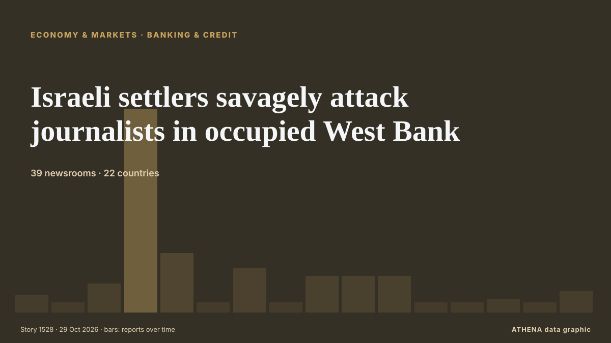

Οικονομία
Η παγκόσμια οικονομία σήμερα
Τελευταίο 24ωρο — γεγονότα: 67, χώρες: 53. Υψηλότερος κίνδυνος τώρα: 5.3 — Cyprus hotels face a make-or-break deadline and Parliament knows it.

Οικονομία & ΑγορέςIsraeli settlers savagely attack journalists in occupied West Bank
Deadly unexploded ordnance left by Israeli attacks threatens southern Lebanon's farmers, forcing many to risk their lives to harvest crops. από The New Arab
| 18 Οκτ | 0 |
|---|---|
| 19 Οκτ | 6 |
| 20 Οκτ | 1 |
| 21 Οκτ | 4 |
| 22 Οκτ | 5 |
| 23 Οκτ | 10 |
| 24 Οκτ | 2 |
| 25 Οκτ | 12 |
| 26 Οκτ | 49 |
| 27 Οκτ | 40 |
| 28 Οκτ | 45 |
| 29 Οκτ | 39 |
| 30 Οκτ | 37 |
| 31 Οκτ | 3 |
Παρακολούθηση
Τελευταία
Shadab heroics lift Pakistan past England
Pakistan all-rounder Shadab Khan struck an unbeaten 113 and shared a record 89-run last-wicket stand with Haris Rauf as the hosts rallied from 154-9 to secure a one-wicket win... από Oman Observer
African players in Europe: Jackson brace ends City’s perfect record
AFP Sport highlights African headline-makers in the major European leagues last week. από Free Malaysia Today
Sinner to play in Six Kings Slam in Riyadh at end of December - report
(ANSA) - ROME, 26 OTT - Jannik Sinner will make his comeback from a long layoff with a knee injury at the end of December at the Six Kings Slam event in Riyadh, Saudi Arabia, Supertennis, the TV… από ANSA English
UN raises ‘ethnic cleansing’ concerns over Israel’s Hebron operation
Israel's military operation in the occupied West Bank city of Hebron, launched after a deadly attack by Palestinian gunmen, raises serious concerns of "ethnic cleansing", the United Nations warned… από Al-Monitor
Revolut takes on high street banks with launch of personal loans in UK
The unsecured loans, ranging between £2,000 and £25,000, offer ‘near-instant’ funds after approval. από Evening Standard (London)
California Billionaire Tax Vote Explained
California votes on 3 November on a one-time 5% tax on billionaires. από The Rio Times
Bulgaria Joins International Initiative to Develop Air Defence Capabilities
Oct 26 - Britain will not join the Canada-led Defence, Security and Resilience Bank, in a setback to efforts to create the world's first global defence bank, according to a person familiar with the… από The Straits Times
Venezuelan leader demands Bank of England return gold
CARACAS, Venezuela (AFP) — Venezuelan interim president Delcy Rodriguez demanded Wednesday the return of her country's gold reserves held at the Bank of England, where they were frozen more than six… από Jamaica Observer
AKAA art and design fair brings African artists to Paris
Every year the art and design fair AKAA, or "Also Known as Africa", brings dozens of African and Afro-descendant artists to the French capital. από France 24 English
Norway's sovereign wealth fund loses over $30 billion in 3rd quarter
Norway's sovereign wealth fund, the world's largest with assets of more than $2 trillion, on Thursday reported a negative return of 278 billion kroner ($31 billion) in the third quarter as it was… από The Local Norway
Italy demands release of five activists detained by Israel during West Bank olive harvest
(ANSA) - ROME, 22 OTT - The Italian Ministry of Foreign Affairs has taken action to obtain information regarding the detention of several female Italian activists in the village of al-Bweib, south of… από ANSA English
IMF says Middle East, North Africa and Pakistan GDP to contract 1.3pc in 2026
The International Monetary Fund (IMF) on Thursday forecast a sharp drop in economic output in Pakistan, the Middle East and North Africa this year due to the US-Israeli-led war against Iran, followed… από Dawn